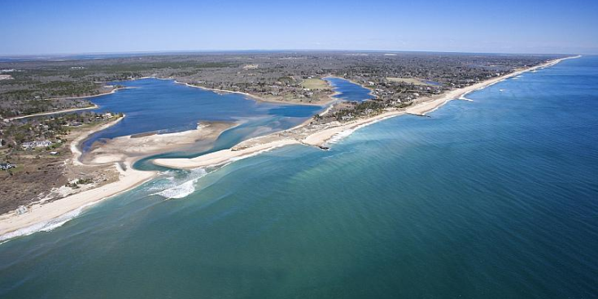
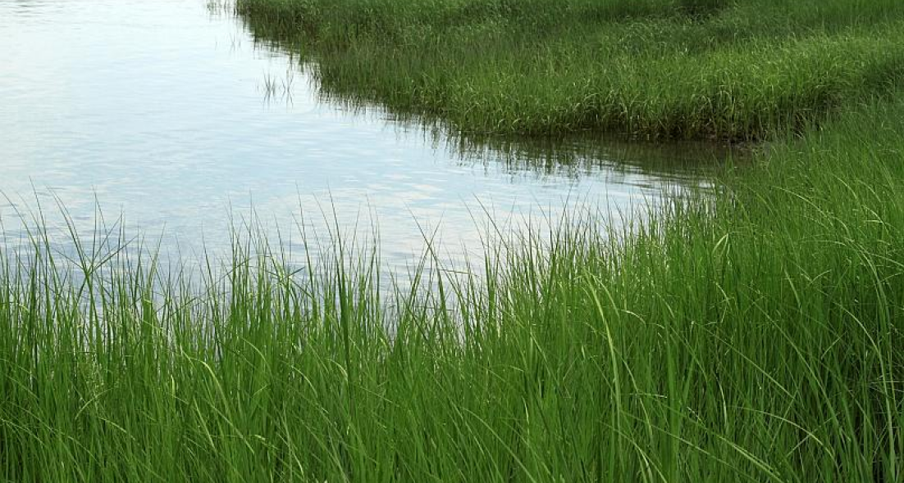

ECO-INNOVATION
Seagrass: The plant that removes carbon 30 times faster than a rainforest
By Jonny Walfisz • Updated: 30/09/2021
WWF has teamed up with Sky to promote their ‘Force for Nature’ campaign, an effort to repopulate the UK’s coasts with carbon-capturing seagrass.

New research has found that while the vast majority (93 per cent) of adults know what’s causing climate change, only about half the population is aware of carbon-capture and its use in reversing the damaging effects of global warming.
Carbon-capture is the process by which carbon dioxide is removed from the atmosphere. This can be done by innovative technology or anything that photosynthesises, like a tree.
Although we often think of huge rainforests like the Amazon as being crucial for carbon capture, smaller natural resources also play a big part. A great example is seagrass, the plant at the root of WWF’s project.
“Seagrass captures carbon in the same way that the grass on land would. It just photosynthesises the sun’s energy to make energy,” Alec Taylor, the head of the land-use climate programme for WWF tells Euronews Green.
Seagrass is particularly quick at harvesting carbon, working over 30 times faster than a rainforest on land would, Taylor explains. As seagrass can stay undisturbed underwater, it can also remove the carbon for thousands of years.
“Whereas a tree might capture carbon, when it gets cut down, the carbon is released back into the atmosphere. Seagrass can hold on to it, and it buries it into the roots.”
Seagrass is also great for creating a habitat for young fish and creating beautiful ecosystems for snorkellers to enjoy.
Replanting seagrass across the country
WWF’s plan is to repopulate the coasts of the UK with seagrass.
Hundreds of years ago, there was far more seagrass around the coasts. But the UK has been one of the worst countries in the world at protecting its natural resources. 92 per cent of the UK’s seagrass has disappeared in the last century.
“The UK’s natural habitats are a key ally in the fight against climate change, yet they are being depleted at an alarming rate. From wildflower meadows to peat bogs and kelp forests to seagrass, we must protect these vital assets and secure their future – for our own sake,” Tanya Steele, Chief Executive at WWF, said.
The campaign wants to plant about 30,000 square metres of seagrass habitat in the Solent Southampton, about the same as three football pitches.
The government has had some really good words on it in recent months. But we now need to see some of those words followed up with action.
But that’s only the beginning of the project, Taylor says. “Hopefully, we can use that to scale up things like seagrass restoration from, say, a few hectares to a few 100 hectares.”
Key to scaling up the project will be investment from the government. With COP26 on the horizon, Taylor thinks it’s time for the government to do more than just talk about climate efforts. “The government has had some really good words on it in recent months. But we now need to see some of those words followed up with action.”
Some of the action WWF wants to see includes greater investment in natural resources like seagrass. They also want a removal of rules that treat restoration efforts the same as environmentally destructive projects, requiring fees and complex approval processes.
How can you get involved in bringing seagrass back?
The campaign is about more than just repopulating Britain’s coasts with seagrass, it’s also about educating people to the importance of natural resources in reversing the effects of climate change.
WWF’s partnership with Sky Zero for ‘Force for Nature’ asks the public to add their names to a call on the government to keep their climate promises.
For every 1,000 people who sign up, Force for Nature will plant 4,000 seagrass seeds.

A field of seagrass at low tide.Canva
If you want to get your hands dirty and live by the coast, WWF has plenty of volunteering opportunities too. “We'll be needing lots of hands to help fill the sacks with sand and plant the seeds and get the seagrass seeds out into the water,” Taylor says.
Not lucky enough to live near the beach? Well you can still make a difference Taylor says. Planting trees and planning shopping to waste as little food as possible are key ways to help. He also recommends you stop buying compost with peat in it (a government ban on peat compost comes into effect in 2024). Peat bogs are another great natural carbon-capture resource and the more they are left alone, the better for our planet.
“Ultimately at the heart of this campaign is showing people that these amazing habitats are carbon-capturing machines as well as all of the other benefits that they have,” Taylor concludes.
Article from: https://www.euronews.com/green/2021/09/29/seagrass-the-plant-that-removes-carbon-30-times-faster-than-a-rainforest